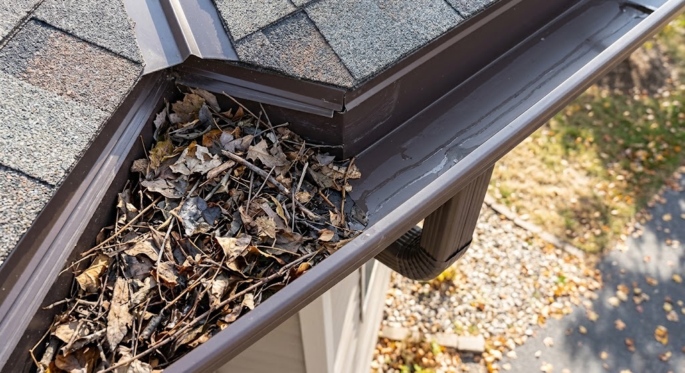
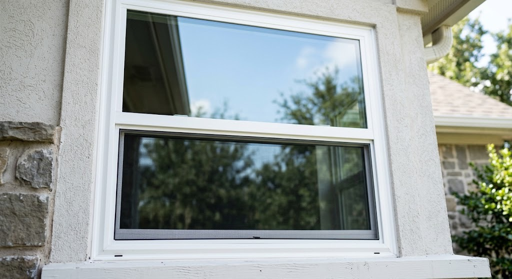
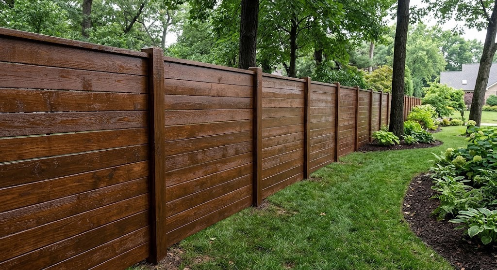

EXTERIOR SERVICES
Exterior maintenance services to help keep your home and outdoor spaces clean, maintained, and looking their best.
Get a Free EstimateChoose from individual services or contact us to discuss multiple exterior projects for your property.

GUTTER DEBRIS REMOVAL
Remove leaves, sticks, and other accumulated debris from residential gutters to help keep them clear and maintained.

WINDOW CLEANING
Clean residential windows to remove dirt, dust, and buildup and improve the appearance of your home.

FENCE STAINING
Apply stain to suitable wood fences to refresh their appearance and help maintain the wood.
GUTTER DEBRIS REMOVAL
Leaves, sticks, and other debris can accumulate in gutters over time. Our gutter debris removal service clears accumulated material from residential gutters and cleans up the surrounding area afterward.
WINDOW CLEANING
Regular window cleaning removes dirt, dust, and buildup from residential windows and helps keep your home's exterior looking well maintained.
FENCE STAINING
Fence staining can refresh the appearance of weathered wood and provide a consistent finish across your fence. We can discuss stain options and the condition of your fence before beginning the project.
We provide exterior services throughout Lake Highlands and surrounding areas of the DFW Metroplex.
Contact us for a free estimate on gutter debris removal, window cleaning, or fence staining.
Get a Free Estimate